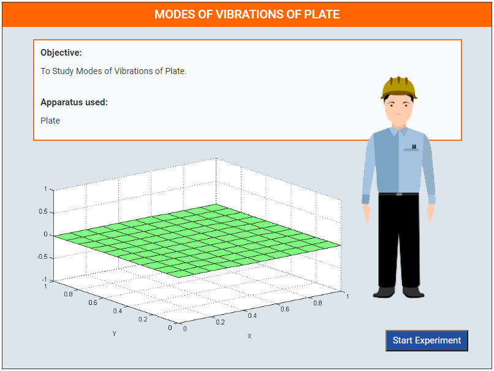
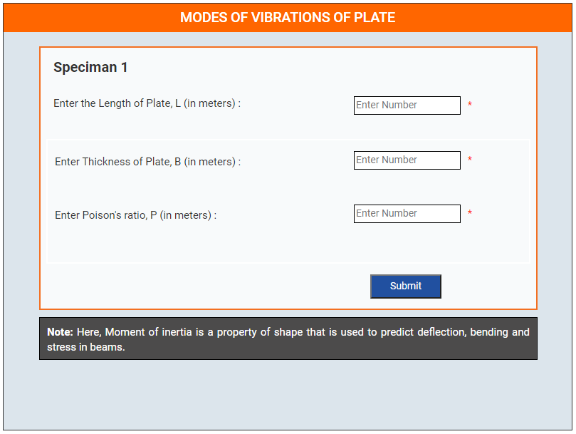
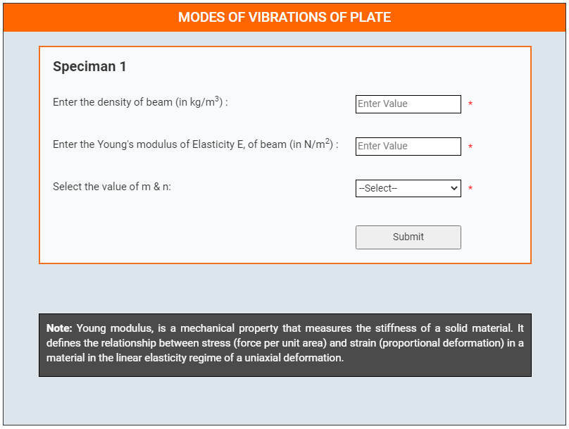
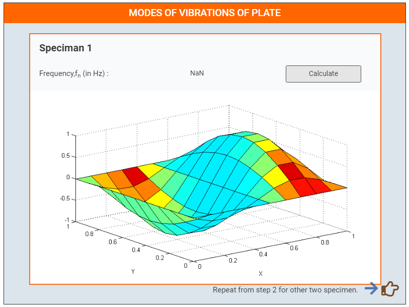
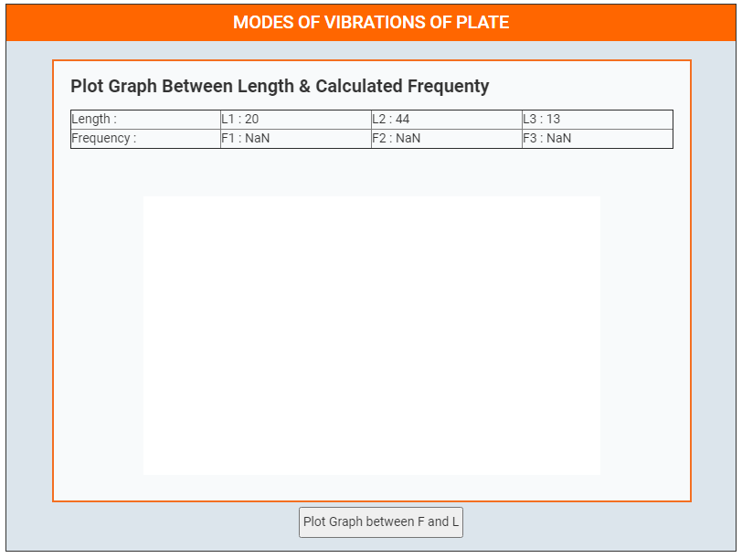
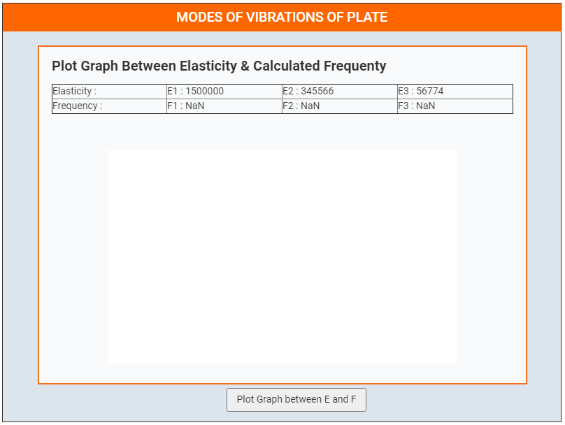
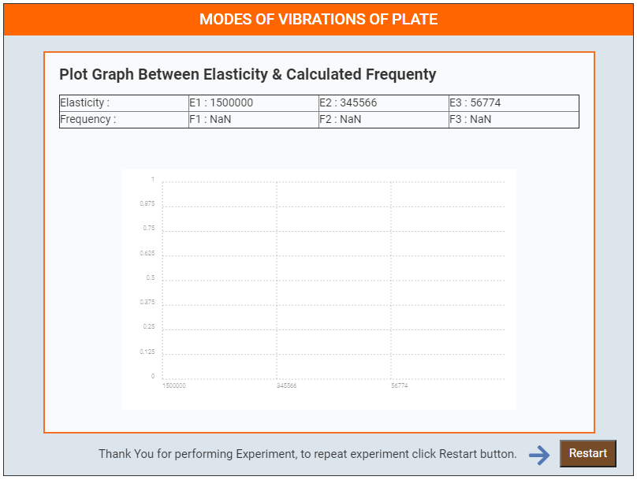

ProcedurePreparation of specimens: 1. Click Start Here button to start the experiment.  2. Select all the parameters.  3. Enter details for Specimen 1.  4. Click Calculate button to show Calculated frequency with animated graph.  5. Repeat the same process for specimen 2 and specimen 3. 6. Plot Graph Between Length & Calculated Frequenty.  7. Plot Graph Between Elasticity & Calculated Frequenty.  8. Click Restart button to perform experiment again.  |